While in BETA this section is subject to changes. We are working to simplify the configuration and administration of OpenVidu High Availability.
The deployment of OpenVidu High Availability on AWS is automated using AWS CloudFormation, with 4 EC2 Instances as Master Nodes and any number of Media Nodes managed within an Auto Scaling Group. The Auto Scaling Group of Media Nodes is configured to scale based on the target average CPU utilization.
Internally, the AWS deployment mirrors the on-premises setup, allowing you to follow the same administration and configuration guidelines provided in the On Premises High Availability documentation. However, there are specific considerations unique to the AWS environment that are worth taking into account.
You can start and stop the OpenVidu High Availability cluster at any time. The following sections detail the procedures.
To shut down the cluster, you need to stop the Media Nodes first and then stop the Master Nodes; this way, any ongoing session will not be interrupted.
Select the CloudFormation Stack that you used to deploy OpenVidu High Availability.
In the "Resources" tab, locate the resource with the logical ID: OpenViduMediaNodeASG, and click on it to go to the Auto Scaling Group Dashboard with the Auto Scaling Group of the Media Nodes selected.
Set the "Desired capacity", "Min desired capacity", and "Max desired capacity" to 0, and click on "Update".
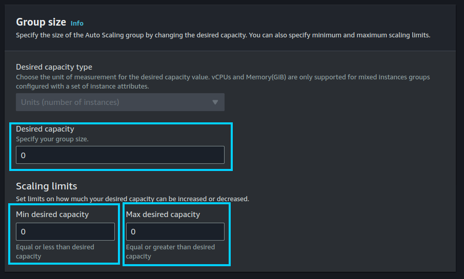
Wait until the "Instance Management" tab shows that there are no instances in the Auto Scaling Group.
Warning
It may happen that some instances are still in the "Terminating:Wait" lifecycle state after setting the desired capacity to 0. This is because the Auto Scaling Group waits for the instances to finish processing any ongoing room, ingress, or egress operations before terminating them. This can take a few minutes. If you want to force the termination of the instances, you can manually terminate them from the EC2 Dashboard.
Select the CloudFormation Stack that you used to deploy OpenVidu High Availability.
Locate the resource with the logical ID: OpenViduMasterNodeASG. Click on it to go to the Auto Scaling Group Dashboard with the Auto Scaling Group of the Master Nodes selected.
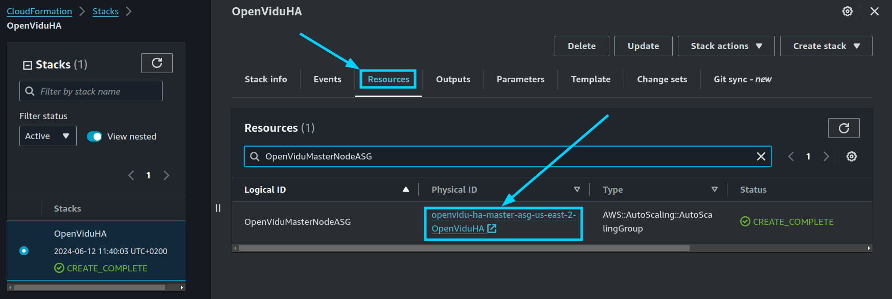
Set the "Desired capacity", "Min desired capacity", and "Max desired capacity" to the desired number of Media Nodes, and click on "Update". For the Master Nodes auto scaling group, the number of instances must be 4.
Wait until the "Instance Management" tab shows that there are the desired number of instances in the Auto Scaling Group.
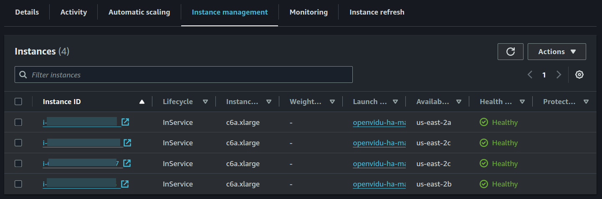
Go back to the CloudFormation Stack and locate the resource with the logical ID: OpenViduMediaNodeASG. Click on it to go to the Auto Scaling Group Dashboard with the Auto Scaling Group of the Media Nodes selected.
Click on "Actions > Edit".
Set the "Desired capacity", "Min desired capacity", and "Max desired capacity" to the desired number of Media Nodes, and click on "Update". In this example, we set the desired capacity to 2.
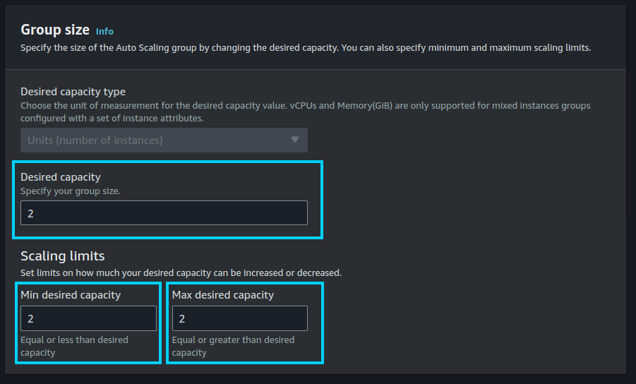
Wait until the "Instance Management" tab shows that there are the desired number of instances in the Auto Scaling Group.
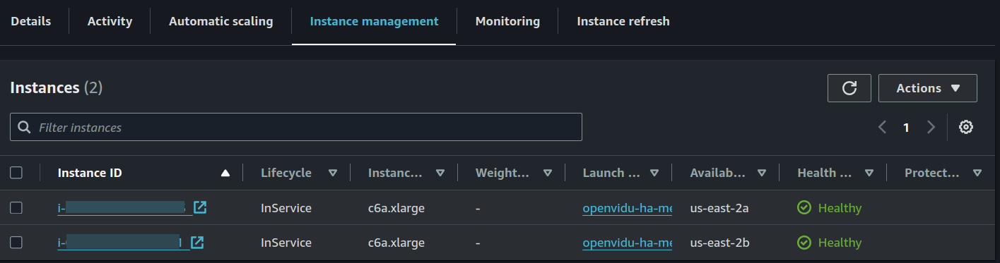
Select the CloudFormation Stack that you used to deploy OpenVidu High Availability.
Locate the resource with the logical ID: OpenViduMediaNodeLaunchTemplate. Click on it to go to the Launch Template Dashboard with the Launch Template of the Media Nodes selected.
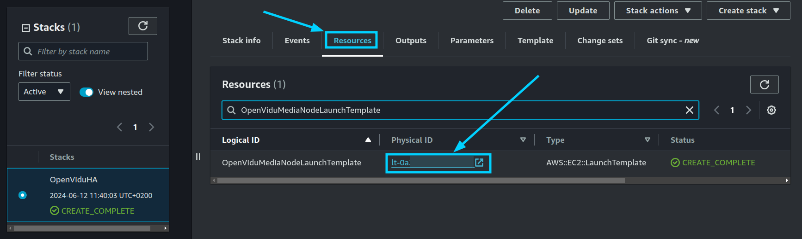
Click on "Actions > Modify template (Create new version)".
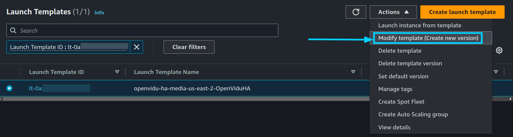
In the "Instance type" section, select the new instance type and click on "Create template version".
Go to the CloudFormation Stack and locate the resource with the logical ID: OpenViduMediaNodeASG. Click on it to go to the Auto Scaling Group Dashboard with the Auto Scaling Group of the Media Nodes selected.
Click on "Actions > Edit".
In the Launch Template section, select the new version of the launch template we just created at step 5 which is the highest version number.
Then, click on "Update".
Info
By configuring "Latest" as the launch template version, you no longer need to update the Auto Scaling Group every time you modify the launch template. The Auto Scaling Group will automatically use the latest version of the launch template.
Terminate the old instances manually from the EC2 Dashboard if you want to force the termination of the instances. New instances will be launched with the new instance type.
Info
If you want to avoid downtime, you can wait until the Auto Scaling Group replaces the old instances with the new ones. But you will need to increase the desired capacity to force the replacement of the instances and then decrease it to the desired number of instances.
To configure the Auto Scaling settings for the Media Nodes, follow the steps outlined below. This configuration allows you to set the parameters that control how the Auto Scaling Group will scale based on the target average CPU utilization.
Select the CloudFormation Stack that you used to deploy OpenVidu High Availability.
In the "Resources" tab, locate the resource with the logical ID: OpenViduMediaNodeASG and click on it to go to the Auto Scaling Group Dashboard.
Click on "Actions > Edit".
To configure scaling policies, navigate to the "Automatic scaling" tab within the Auto Scaling Group Dashboard, select the unique "Target tracking scaling" autoscaling policy, and click on "Actions > Edit".
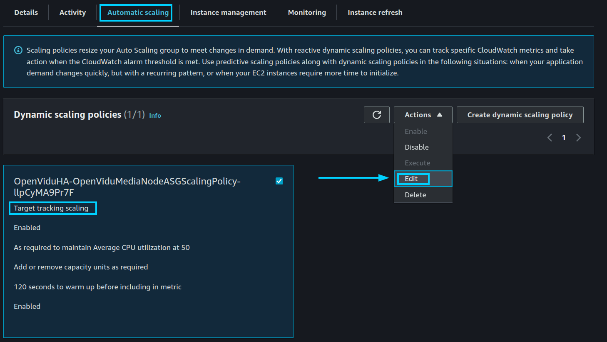
It will open a panel where you can configure multiple parameters. In this example, we set the target average CPU utilization to 30%. Then, click on "Update".
Info
OpenVidu High Availability is by default configured with a "Target tracking scaling" policy that scales based on the target average CPU utilization, however, you can configure different autoscaling policies according to your needs. For more information on the various types of autoscaling policies and how to implement them, refer to the AWS Auto Scaling documentation.
If you need to maintain a fixed number of Media Nodes instead of allowing the Auto Scaling Group to dynamically adjust based on CPU utilization, you can configure the desired capacity settings accordingly. Follow the steps below to set a fixed number of Media Nodes:
Select the CloudFormation Stack that you used to deploy OpenVidu High Availability.
In the "Resources" tab, locate the resource with the logical ID: OpenViduMediaNodeASG and click on it to go to the Auto Scaling Group Dashboard.
Click on "Actions > Edit".
Set the "Desired capacity", "Min desired capacity", and "Max desired capacity" to the fixed number of Media Nodes you require, and click on "Update". In this example, we set the desired capacity to 2.
Wait until the "Instance Management" tab shows that the Auto Scaling Group has the fixed number of instances running.
Regarding the configuration, in AWS it is managed similarly to an on-premises deployment. For detailed instructions, please refer to the Changing Configuration section. Additionally, the How to Guides offer multiple resources to assist with specific configuration changes.
In addition to these, an AWS deployment provides the capability to manage global configurations via the AWS Console using AWS Secrets created during the deployment. To manage configurations this way, follow these steps:
Select the CloudFormation Stack that you used to deploy OpenVidu High Availability.
In the "Outputs" tab, click the Link at "ServicesAndCredentials". This will open the AWS Secrets Manager which contains all the configurations of the OpenVidu High Availability Deployment.
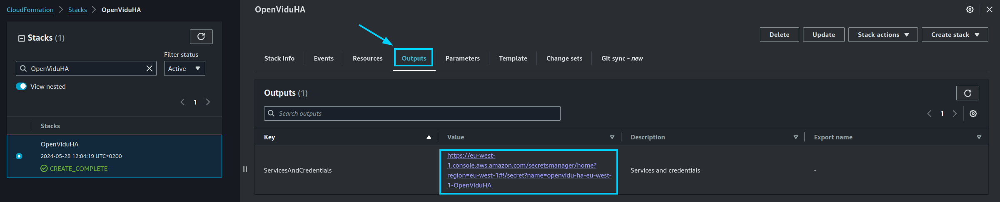
Click on the "Retrieve secret value" button to get the JSON with all the information.
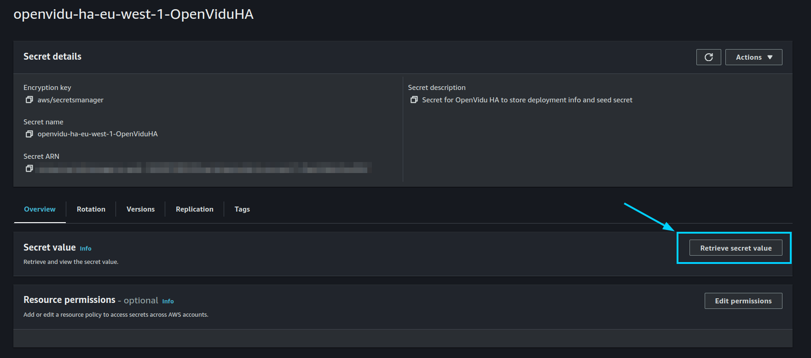
Modify the parameter you want to change and click on "Save". The changes will be applied to the OpenVidu High Availability deployment.
Go to the EC2 Console and click on "Reboot instance" in the Master Node instance to apply the changes.
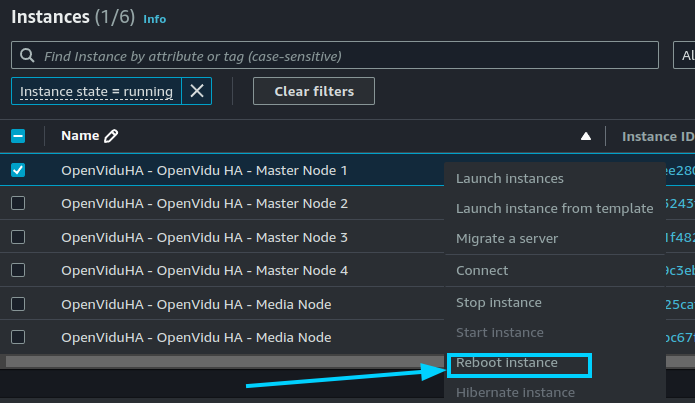
The changes will be applied automatically in all the Nodes of the OpenVidu High Availability deployment.


{kind=link}
{kind=link}

{kind=link}
{kind=link}
{kind=link}
{kind=link}
{kind=link}
{kind=link}
{kind=link}


{kind=link}
{kind=link}

{kind=link}
{kind=link}
{kind=link}
{kind=link}